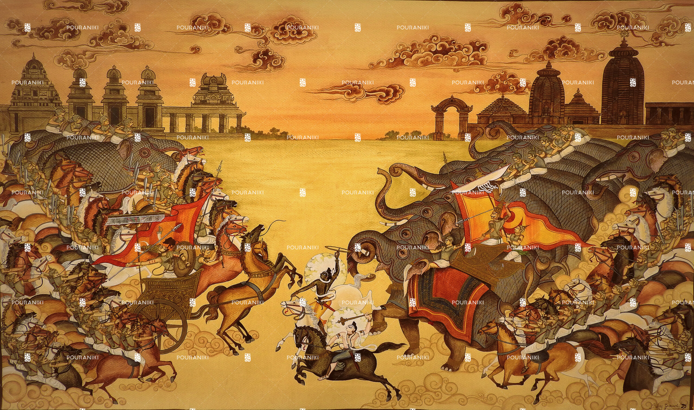
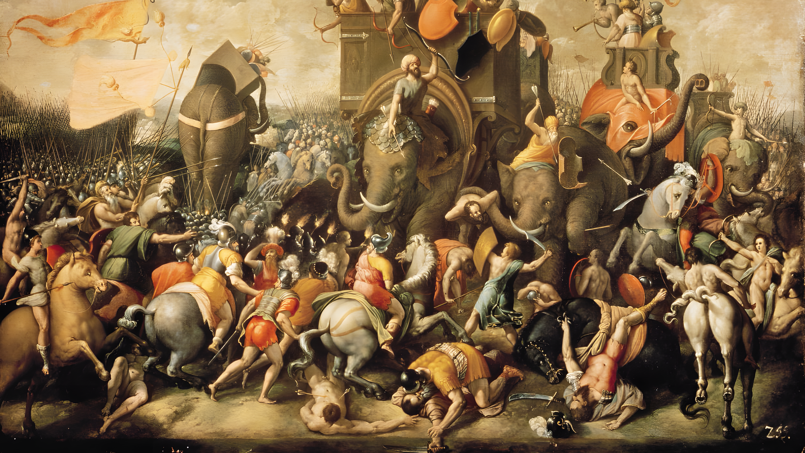
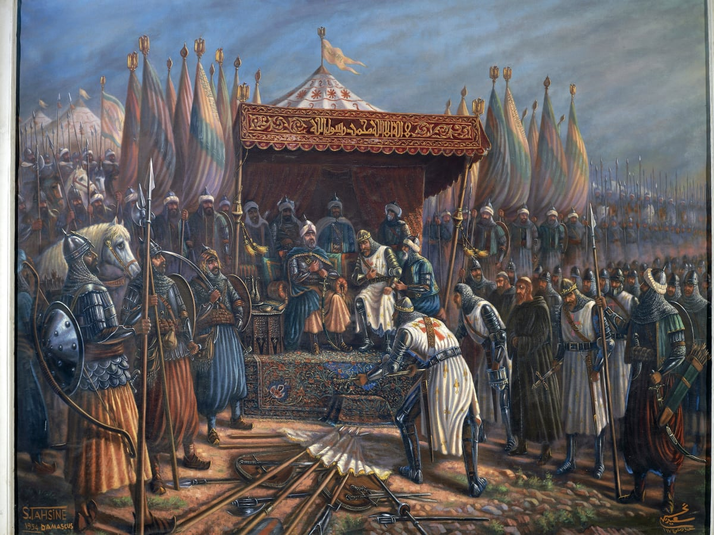
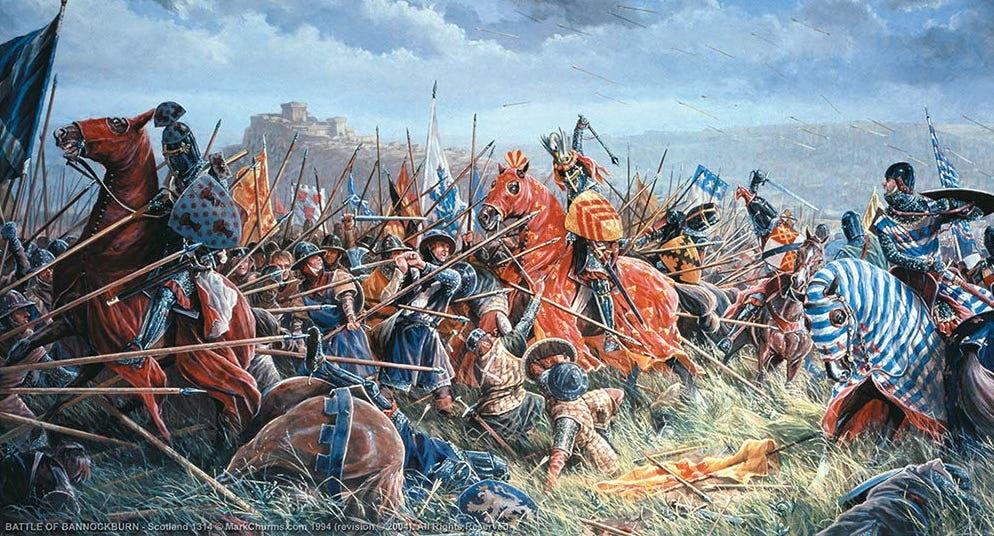
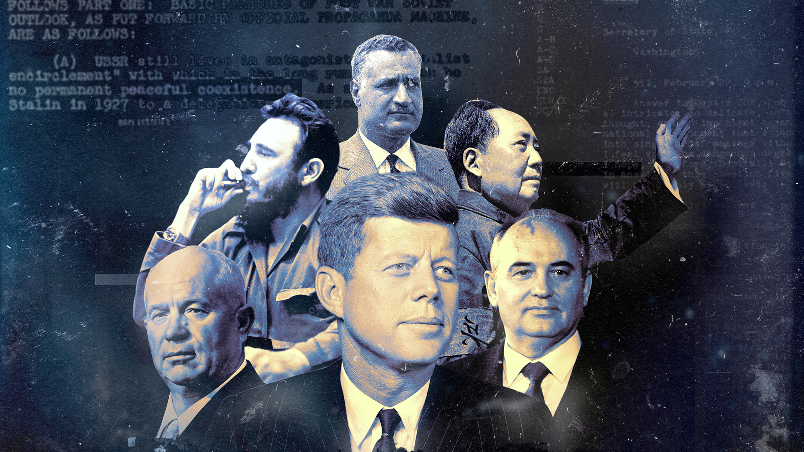

Introduction
War has been a significant part of human history, shaping civilizations, cultures, and societies. From ancient battles to modern conflicts, wars have influenced the course of history in profound ways.

War has been a significant part of human history, shaping civilizations, cultures, and societies. From ancient battles to modern conflicts, wars have influenced the course of history in profound ways.
Ancient wars were fought between city-states, empires, and kingdoms. Notable examples include the Peloponnesian War, the Punic Wars, and the conquests of Alexander the Great.
More about Ancient Wars
Kalinga War Painting

Second Punic War Painting
Medieval wars were fought between kingdoms, empires, and feudal lords. Notable examples include the Hundred Years' War, the Wars of Scottish Independence, and the Crusades.
More about Medieval Wars
The Crusades Painting

War of Scottish Independence Painting
Modern wars are characterized by industrialization, technological advancement, and global conflicts. Notable examples include World War I, World War II, and the Cold War.
More about Modern Wars
Leader During the Cold War

American Civil War Painting